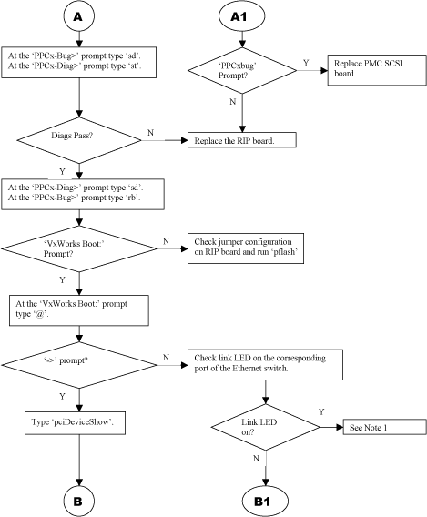
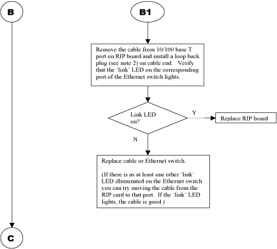
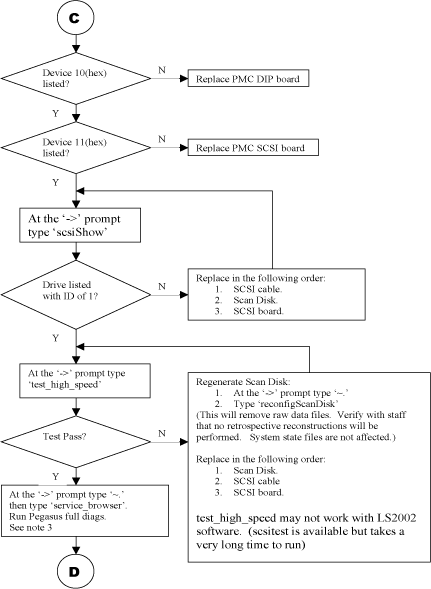
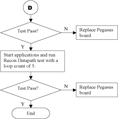

Proprietary to General Electric
Direction 5114043-800, Rev# 9
LightSpeed 3.X Service Methods (Advanced)
Proprietary to General Electric |
The Pegasus board may cause intermittent reconstruction problems, especially if the VME power supply is set above 5.00 VDC. The PLL circuit for the Filter DSP is highly noise sensitive and can lose lock. Pegasus board level diags will usually pass when this occurs. With a very high loop count (100000) the 512kB DP Addr Bus Test or 256kB DP Addr Bus Test under the C67 tests may show some errors on boards that are highly sensitive.
During reconstruction this sensitivity can cause filter errors and result in reconstruction timeouts. When a reconstruction timeout occurs, a subdirectory is created in the /usr/g/service/log/Recon/Resume directory with a name in the format 'Fri_Oct_11_16_43_52_CDT_2002' that indicates the date and time when the timeout occurred. Since there can be many events that can cause a timeout the igctrl.timers.log.t file can help determine if the failure is Filter related. When reviewing this file, please keep in mind that Filter aborts do not necessarily indicate a Filter problem. See Section 2, for some error examples.
For troubleshooting purposes, set the VME power supply to 4.75VDC and see if the problems disappear.
The troubleshooting flowchart (Figures Illustration 1 through Illustration 4) can assist in locating a defective FRU in the ICE chassis. There are some tests that make use of loop-back plug and instructions are included on the last page on constructing one. The loop-back may never be needed, but can be an invaluable tool in isolating serial communications and LAN problems.
| Pegasus | 2216467 | |
| RIP PPC | 2197234-2 | T3202 LC |
| H2 dip | 2245261 | |
| H3 Dip | 2259530 | |
| SCSI | 2265396 | |
| VME | 2260421 |
Illustration 1: Recon Troubleshooting Flowchart, Part 1 of 4

Illustration 2: Recon Troubleshooting Flowchart, Part 2 of 4

Illustration 3: Recon Troubleshooting Flowchart, Part 3 of 4

Illustration 4: Recon Troubleshooting Flowchart, Part 4 of 4

Arrival at the point indicates that there is a physical connection between the RIP board and the Ethernet switch but the RIP board is unable to load VxWorks from the TFTP server running on the Octane. Verify that the 'link ' LED is illuminated for the Ethernet switch port that corresponds to the cable from Octane. If the 'link' LED is off troubleshoot the Octane side of the loop. If the 'link' LED is on, try the replacing the following:
Octane/IP30
Ethernet switch
RIP board
Software
A loop-back plug can be made from a locally available 8-position RJ-45 jack by connecting the following pins together:
1 and 6
2 and 3
4 and 5 (for serial line)
Diagnostics can also be run by typing, in a shell:
/usr/g/httpd/cgi-bin/ig_diags.ex -menu interactiveDiags
EXAMPLE OF FILTER SETUP FAILURE
[igctrl] sending filter setup to filter [igctrl] error: filter setup failed, received response 806, expected 804 [igctrl] process_filter_error() started [igctrl] filter error buffer address = 0xff000990 [igctrl] process_filter_error() complete
EXAMPLE OF FILTER ABORT FAILURE
[igctrl] sending abort to filter [igctrl] filter abort failed, received response 804, expected 808 status = 0
EXAMPLE OF NORMAL FILTER ABORT
| NOTE: | This doesn't normally indicate a problem with the Pegasus board. |
[igctrl] received ABORT while in state=3 [igctrl] aborting job with recon_seq_id=21636 [igctrl] clearing timers [igctrl] sending abort to filter [igctrl] received abort response from filter recon_seq_id = 21636